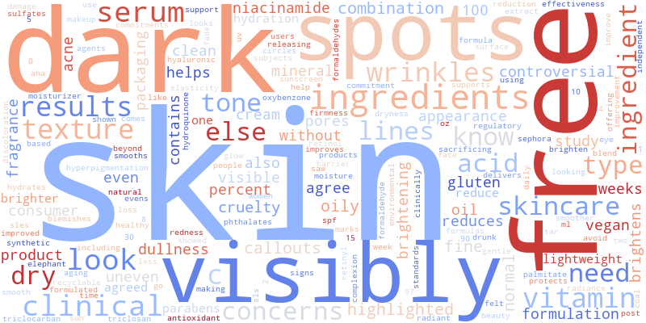
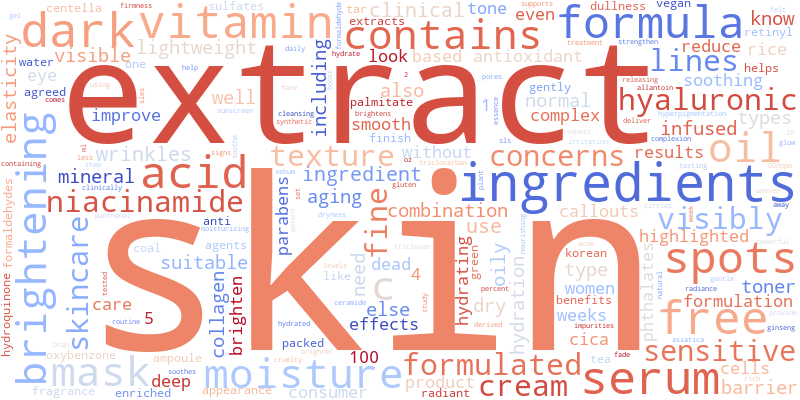

Hype vs. Hyperpigmentation
By Vyomi Seth, Shamita Goyal, Tanvi Vidyala, and Sarah Sun
Overview
This study examines differences in marketing strategies and consumer perceptions of hyperpigmentation treatments in Asian and Western skincare markets. Using exploratory data analysis, machine learning classification, and hypothesis testing, we analyzed ingredient emphasis, pricing structures, and linguistic framing in product descriptions from both regions across 421 products scraped from Sephora and YesStyle.
Our findings reveal that Asian skincare brands prioritize gentle, long-term skincare benefits, often highlighting ingredients like Niacinamide and Tranexamic Acid, whereas Western brands focus on clinical efficacy and faster results, emphasizing Vitamin C and Alpha Arbutin.
Data
We collected data by running the Easy Scraper Chrome extension on two storefronts:
- Sephora: 219 products filtered by the "dark spots" concern, representing primarily Western brands from the US, France, UK, Canada, and Germany.
- YesStyle: 202 products tagged for hyperpigmentation, all from the South Korean skincare category.
Each product included brand name, price (USD), product description, and ingredient list. We used the OpenAI API to label each Sephora product by country of origin and manually validated a 10% sample, finding all labels to be accurate.
Ingredient Analysis
We analyzed how often five key brightening ingredients (Vitamin C, Niacinamide, Alpha Arbutin, Kojic Acid, and Tranexamic Acid) appeared in product descriptions from each region.
Niacinamide is the most frequently mentioned ingredient in Asian products, though it appears slightly more often in Western marketing too, suggesting it is popular in both regions. Vitamin C is the most mentioned ingredient in Western products, with a significantly higher proportion than in Asian skincare. Alpha Arbutin and Kojic Acid are nearly nonexistent in Korean product descriptions, pointing to distinct formulation philosophies rather than ingredient unavailability.
Price Comparison
We visualized the distribution of prices using KDE and box plots to identify whether one market tends to be more expensive than the other.
Western skincare products have a wider price distribution, including a significant number of higher-priced items, with outliers reaching $325 (Element Eight, Westman Atelier). Asian skincare products are more affordable, with prices clustering at lower values and fewer extreme outliers. The presence of high-priced Western outliers suggests that Western markets accommodate a wider price spectrum, with luxury brands significantly driving up price variation.
Marketing Language
We tokenized product descriptions, counted word occurrences, and visualized the results to understand how each market describes its products.


Western companies focus on results, using words like "dark," "visibly," "spots," and "clinical," and highlight anti-aging with words like "wrinkles" and "lines." Asian companies focus more on ingredients and skin type suitability, with words like "extract," "formula," "moisture," and "sensitive." Western company descriptions seem to focus on solving problems and showing visible changes; Asian descriptions highlight safe and nourishing formulas.
Hypothesis Testing
We performed a Chi-Square Test of Independence to determine whether the difference in word usage between Western and Asian skincare descriptions is statistically significant or just random variation.
3475
Chi-Square Statistic
word usage across markets
p ≈ 0
P-Value
statistically significant
421
Products Analyzed
219 Western · 202 Asian
Since the p-value is effectively zero, the difference in word usage between Western and Asian skincare descriptions is statistically significant, confirming that the two markets use distinct vocabulary patterns driven by cultural preferences, marketing strategies, and consumer expectations.
Classification Model
We converted product descriptions and ingredients into numerical features using TF-IDF, combined with normalized price, and trained a Random Forest classifier to predict whether a product is from an Asian or Western brand.
95.3%
Model Accuracy
random forest classifier
1.00
Western Recall
no Western products missed
0.89
Asian Recall
some Asian → Western errors
The model performs very well overall, with high precision and recall confirming that marketing language, ingredient choices, and pricing contribute meaningfully to regional differences in skincare branding. The lower recall for Asian products suggests that some Asian products were mistakenly classified as Western, which could be addressed by balancing the training data or adjusting classification thresholds.
Conclusion
Our analysis confirmed that Asian skincare brands focus more on gentle, long-term skincare benefits while Western brands highlight clinical efficacy and fast results. Western brands used terms like "clinical," "dark spots," and "visible results," while Asian brands used "moisture," "gentle," and "radiance," reflecting different consumer expectations shaped by cultural beauty standards.
Limitations include our datasets being primarily English-language and coming from a single storefront each, which may introduce bias from the platform's formatting rather than pure regional differences. Future work could expand to more localized brands, incorporate multilingual sentiment analysis, and include a wider variety of Asian and Western countries beyond the US and South Korea.